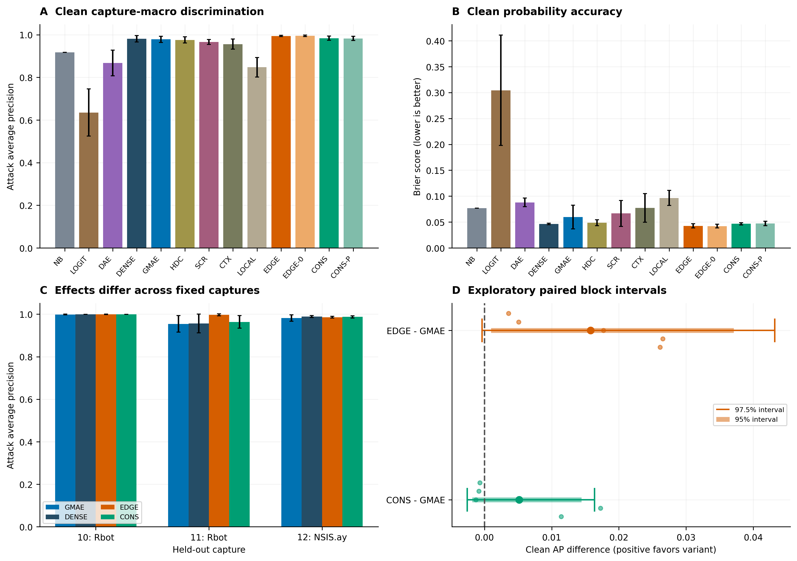
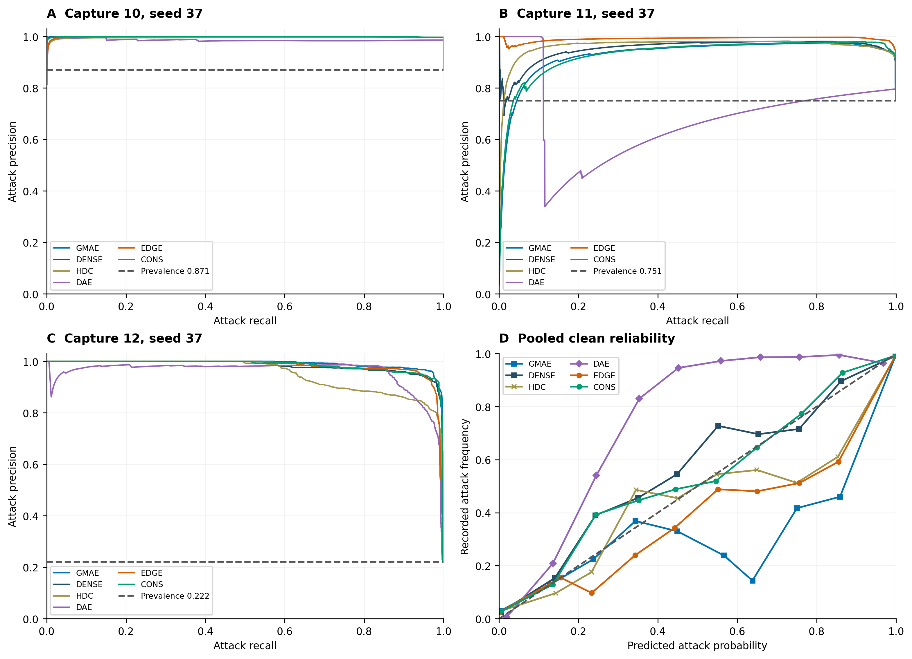
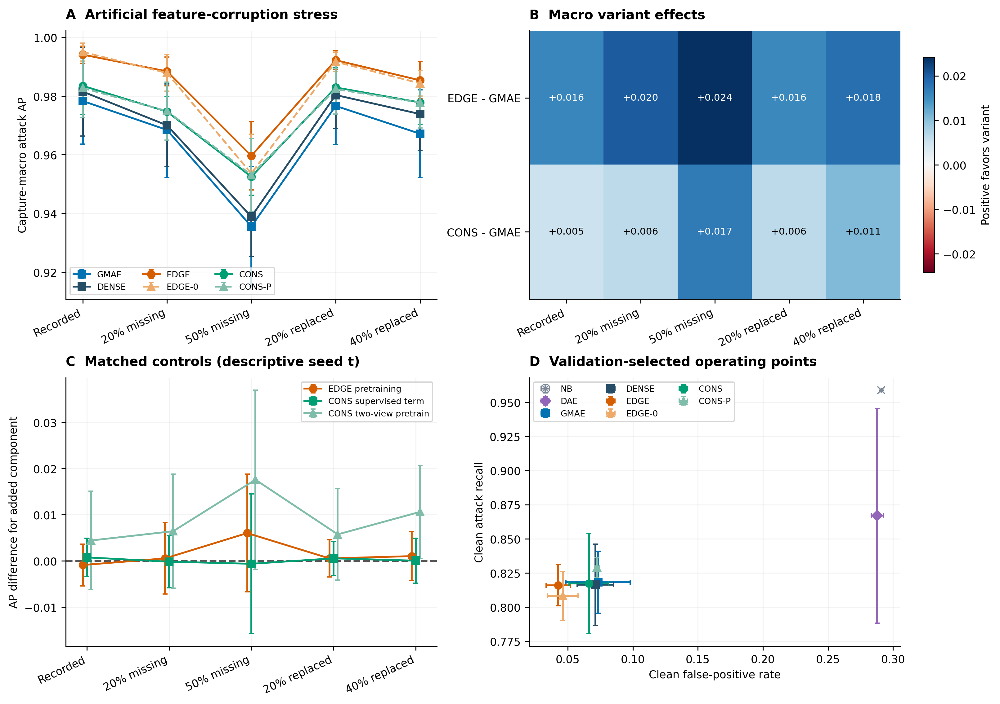
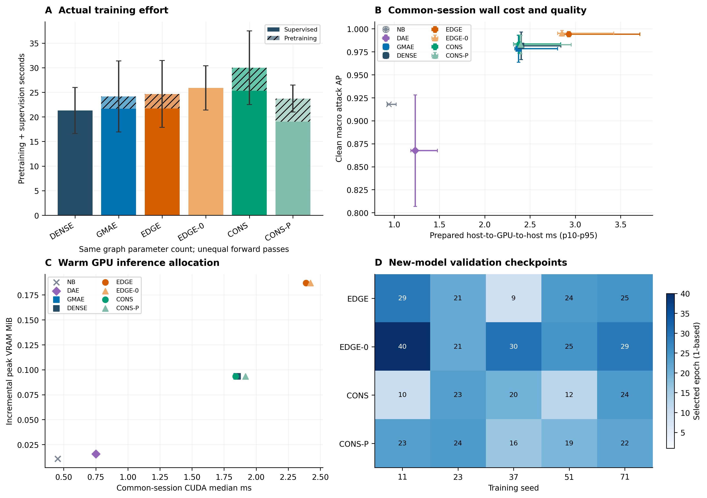
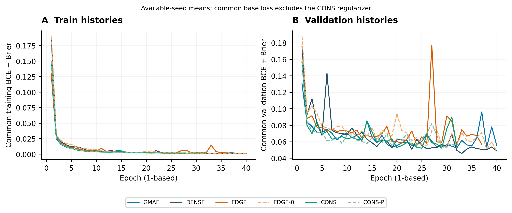
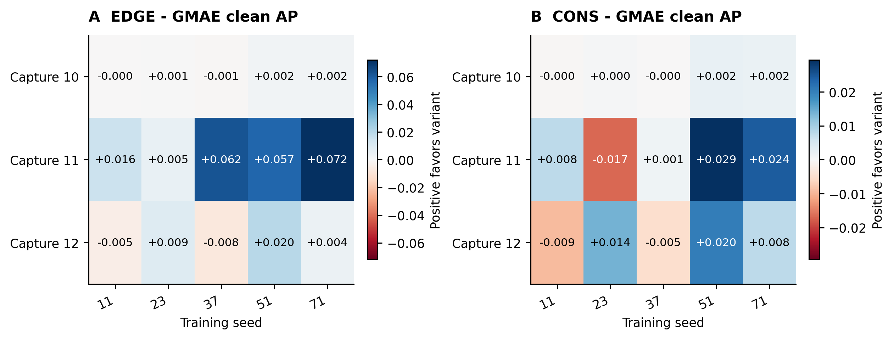

Four empirical main figures and two supplementary diagnostics. Test captures were inspected in the earlier study; these results are an exploratory follow-up. Baseline predictions are imported unchanged. All new model training and inference ran on the RTX 5000 Ada GPU.
Results and limits · Three-page supplement · Methods and equations

A/B show all 13 method clean capture-macro AP/Brier with descriptive seed-t intervals. C separates captures. D distinguishes95%and97.5%paired seed/time-block intervals for the two planned variant-versus-GMAE contrasts. Wider intervals target a nominal two-comparison adjustment; reused test data remains exploratory.
Vector PDF · Provenance
A-C are illustrative seed 37 precision-recall curves, with each capture's prevalence reference. D pools recorded clean probability bins by flow support. Repeated predictions on shared flows are not independent samples.
Vector PDF · Provenance
A shows accuracy under constructed masking/replacement. B gives macro variant-minus-GMAE effects. C isolates the matched controls where possible; CONS-P versus GMAE changes both view count and latent loss. D shows clean operating points at frozen validation thresholds.
Vector PDF · Provenance
Training seconds include actual pretraining/supervision; imported baseline training times come from the prior run. Inference/VRAM are remeasured for all 13 architectures in one follow-up GPUaudit on the same 32-flow window. Wall timing includes decoded transfers, scaling, graph and prediction return; p10-p95 repeat quantiles are not confidence intervals. Epoch selections do not establish convergence.
Vector PDF · Provenance
Vector PDF
Vector PDFNB | NB | Gaussian naive Bayes |
LOGIT | LOGIT | Logistic classifier |
DAE | DAE | Denoising autoencoder |
DENSE | DENSE | Graph classifier without pretraining |
GMAE | GMAE | Original GraphMAE-adapted baseline |
HDC | HDC | HDC-augmented masked graph classifier |
SCR | SCR_FLOW | Shared-context mixture |
CTX | CTX_FLOW | Single expert with context |
LOCAL | LOCAL_FLOW | Single expert without context |
EDGE | EDGE_GMAE | Observed-overlap gated GraphMAE |
EDGE-0 | EDGE_DENSE | Observed-overlap gate without pretraining |
CONS | CONS_GMAE | Corruption-consistent GraphMAE |
CONS-P | CONS_PRE | Consistency pretraining only |